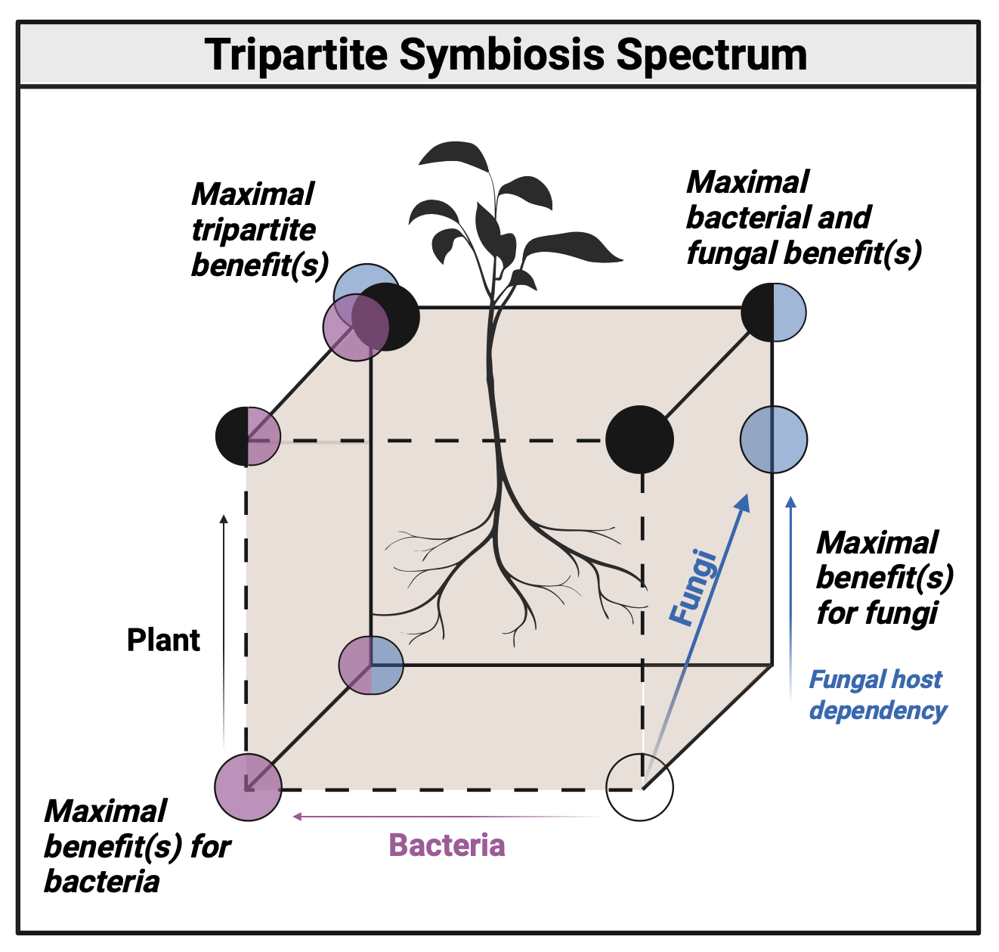
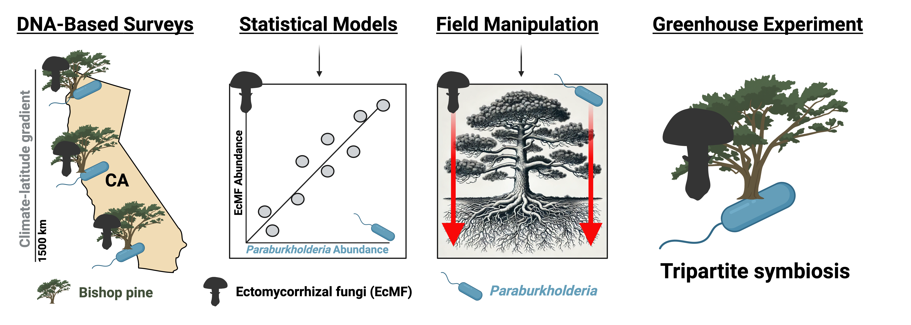
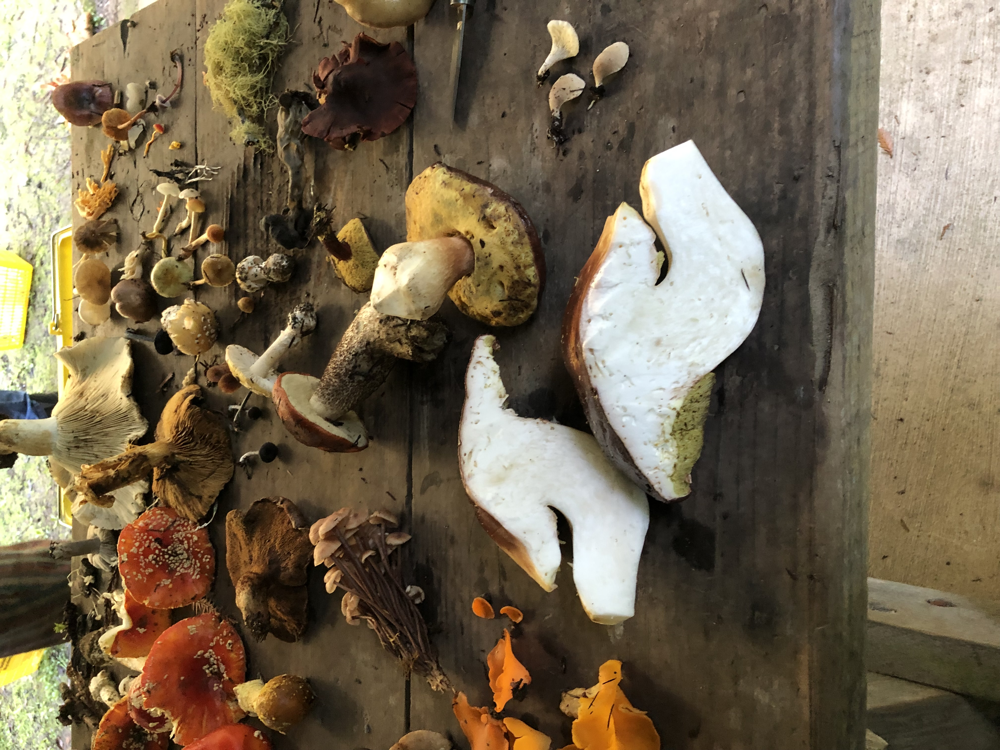
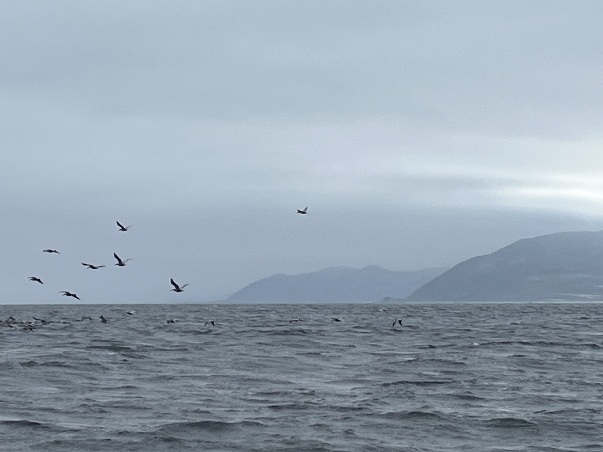
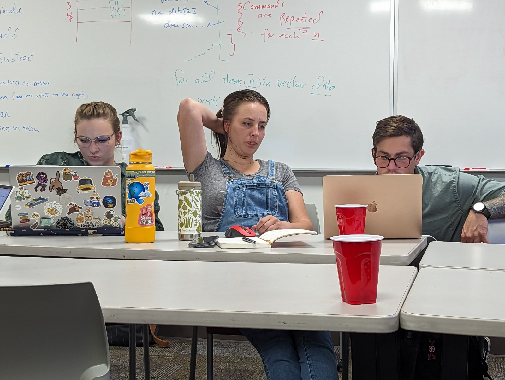
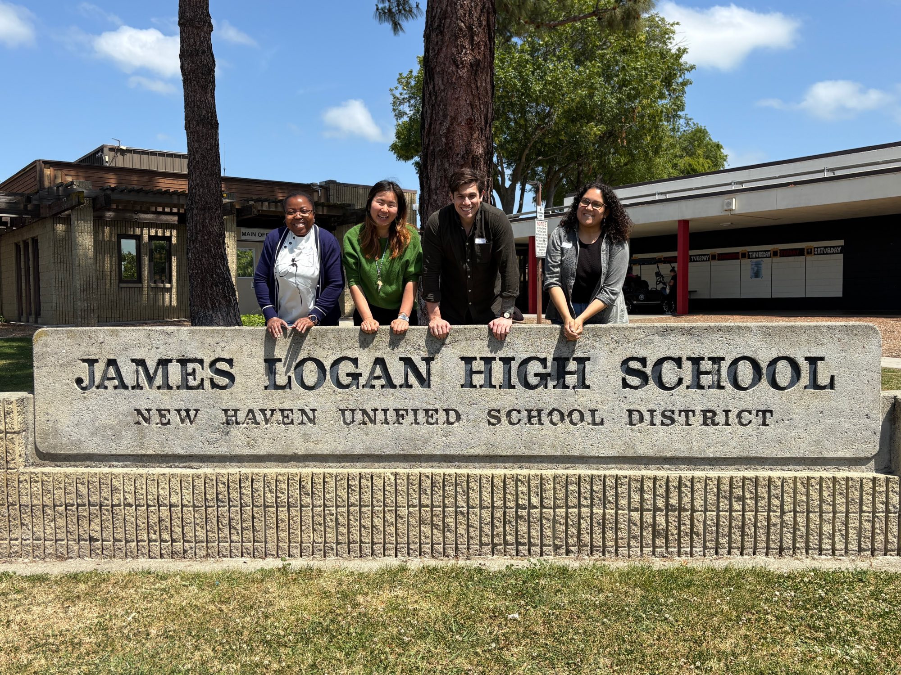

Thinking about the Past, Present, and Future of Bacteria-Fungi-Plant Interactions
Thinking about the Past, Present, and Future of Bacteria-Fungi-Plant Interactions
Louis Berrios, PhD

Ubiquity | Ecology | Importance

A Field-to-Lab Journey

A Little Foray into Mushrooms

What's going on at Santa Cruz?

One line at a time

Mapping the path to become a scientist
Louis is a first-generation college graduate and scientist. He completed his PhD at the University of South Carolina in 2021, where he used functional genetics and comparative genomics to investigate interactions among bacteria, bacteriophages, and plants. Then he received a NSF Postdoctoral Research Fellowship, a Stanford Discovery Grant, and funding from the Society for the Protection of Underground Networks (SPUN) to build on his work at Stanford. There, Louis' work combined molecular field surveys, statistical modelling, multi-omics approaches, field manipulations, meta-analyses, and greenhouse experiments to investigate the mechanisms that facilitate interactions among bacteria, mycorrhizal fungi, and host plants. He is currently a postdoctoral associate at the University of Minnesota, where he continues to build on his research program––now integrating the effects of fungal necromass on community assembly processes and cross-domain gene selection. If you're interested in collaborating or chatting science, feel free to send Louis an email.